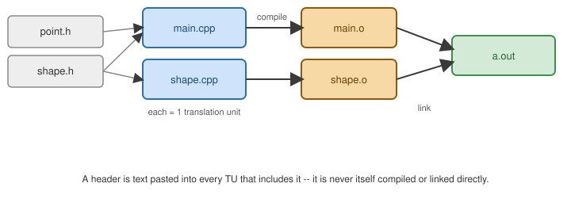

Program Structure and Compilation
|
This content was generated with the assistance of AI and should be verified against the official documentation before being relied on in production. |
Translation Units
Each .cpp file, after the preprocessor expands every #include into it, is one translation unit (TU) — the unit the compiler actually compiles into one .o/.obj object file. A program links one or more TUs
together:

Declarations vs. Definitions
A declaration introduces a name and its type; a definition additionally reserves storage or supplies a body. A name can be declared many times but defined only once per program (see the ODR below):
// declarations -- can appear in as many TUs as include this header
extern int counter; // declares a variable defined elsewhere
int square(int x); // declares a function defined elsewhere
// definitions -- each may exist in exactly one TU
int counter = 0; // defines (and declares) the variable
int square(int x) { return x * x; } // defines (and declares) the functionThe One Definition Rule (ODR)
The One Definition Rule says every non-inline function/variable/class used in a program must have exactly
one definition across the whole program (inline functions/variables and templates are the sanctioned
exception — they may be defined identically in every TU that uses them, which is exactly why they are safe to
put in headers). Violating the ODR is undefined behavior, often not even diagnosed by the linker, so it is worth
internalizing which of these two go in a header:
// point.h
#pragma once
struct Point { // class definitions in headers are fine -- an implicit ODR exception
int x, y;
};
inline int distanceSquared(Point a, Point b) { // "inline" makes a header-defined function ODR-safe
int dx = a.x - b.x, dy = a.y - b.y;
return dx * dx + dy * dy;
}
int area(Point a, Point b); // a NON-inline function must only be *declared* here, and defined
// exactly once in a single .cpp -- defining it here too would violate the ODR
// as soon as two .cpp files include this header.Headers and Include Guards
#pragma once (supported by every mainstream compiler, though not standardized) or the portable
#ifndef/#define/#endif idiom prevents a header’s contents from being pasted twice into the same TU:
#ifndef POINT_H
#define POINT_H
struct Point { int x, y; };
#endif // POINT_HLinkage
A name’s linkage controls whether the same name in a different TU refers to the same entity:
-
External linkage (the default for non-
const/non-staticfree functions and globals) — visible to other TUs at link time. -
Internal linkage (
staticat namespace scope, or an unnamed namespace, orconst/constexprglobals by default) — private to this TU; another TU’s identically-namedstaticentity is a different entity, not a clash. -
No linkage — local variables, function parameters.
static int fileLocalCounter = 0; // internal linkage -- invisible outside this TU
namespace {
void helper() { /* ... */ } // unnamed namespace -- the modern, preferred way to say "internal linkage"
}main
Every program has exactly one main, with one of two standard signatures:
int main(); // no command-line arguments
int main(int argc, char* argv[]); // argc = argument count, argv[0] = program nameReturning from main (or falling off its end) implicitly returns 0; return EXIT_SUCCESS;/return
EXIT_FAILURE; (from <cstdlib>) are the portable spellings of "succeeded"/"failed" for the hosting environment.
A First Look at Modules
C++20 modules replace #include-based textual inclusion with a compiled interface, avoiding both preprocessor
leakage and repeated header parsing:
// math.cppm -- a module interface unit
export module math;
export int square(int x) {
return x * x;
}// main.cpp
import math;
int main() {
return square(6) - 30; // 6*6 - 30 == 6
}Modules need build-system support that varies by toolchain and is still maturing; see Namespaces, Modules, and the Preprocessor for module partitions and feature-test details, and Build and Tooling for the current state of modules support in CMake/GCC/Clang/MSVC.
Static vs. Dynamic Libraries
-
A static library (
.aon Unix,.libon Windows) is an archive of.ofiles, copied into the final executable at link time — larger binaries, no runtime dependency. -
A dynamic/shared library (
.soon Linux,.dylibon macOS,.dllon Windows) is linked by reference and loaded at process start (ordlopened later) — smaller binaries, shared code pages across processes, but the library must be present (and ABI-compatible) at run time.
# static
g++ -c mathlib.cpp -o mathlib.o
ar rcs libmath.a mathlib.o
g++ main.cpp -L. -lmath -o app
# dynamic
g++ -shared -fPIC mathlib.cpp -o libmath.so
g++ main.cpp -L. -lmath -o app -Wl,-rpath,'$ORIGIN'Splitting the Inventory Across Files
A real program is many translation units (TUs). The compiler never sees more than one TU at a time, so everything a
TU uses must be declared in it, usually by including a header; the linker later matches each use to exactly one
definition. The inventory from the running example is split into a header that declares the interface, one source
file that defines it, and a main that uses it:
declares describe()
defines inline available()"] B["book.cpp
defines describe()"] M["shelf_main.cpp
calls describe()"] H -.->|"#include"| B H -.->|"#include"| M B -->|"compile"| BO["book.o
defines: describe, available"] M -->|"compile"| MO["shelf_main.o
needs: describe"] BO --> L["linker"] MO --> L L --> X["shelf (executable)"]
// book.hpp -- the interface of the inventory: declarations only, plus one inline function.
#pragma once
#include <string>
namespace lib {
struct Book {
std::string title;
int year;
int copies;
};
// Declaration: promises that a definition exists in exactly one translation unit.
std::string describe(const Book& b);
// Definition in a header: must be inline, or every includer would define it again (ODR violation).
inline bool available(const Book& b) { return b.copies > 0; }
} // namespace lib// book.cpp -- the one definition of lib::describe.
#include "book.hpp"
#include <format>
namespace lib {
std::string describe(const Book& b) {
return std::format("{} ({}){}", b.title, b.year, available(b) ? "" : " [out]");
}
} // namespace lib#include <print>
#include "book.hpp"
int main() {
lib::Book b{"A Tour of C++", 2013, 0};
std::println("{}", lib::describe(b));
}Compile and link the three files in one command, or compile each separately with -c and link at the end so that
only changed files are rebuilt:
$ clang++ -std=c++23 -Wall -Wextra shelf_main.cpp book.cpp -o shelf_main
$ ./shelf_main
A Tour of C++ (2013) [out]What the object file contains
The object file records symbols. A function’s symbol is its mangled name, which encodes the namespace, the function name and the parameter types, so overloads can coexist in a symbol table that knows nothing about types:
$ clang++ -std=c++23 -c book.cpp -o book.o && nm -gC book.o | grep -E 'describe|available'
0000000000000000 T lib::describe(lib::Book const&)
00000000000002f8 T lib::available(lib::Book const&)
00000000000077f8 T std::__1::__format::__output_buffer<char>::__available[abi:nqe220106]() constBoth functions are defined in book.o: describe because book.cpp defines it, available because the compiler
emitted a copy for this TU that the linker may merge with the copies from other TUs. That merging is what inline
means at the linker level, and it is why an inline function is the right way to put a definition in a header.
The two classic link errors
Two mistakes account for most link failures. Defining a non-inline function in two TUs breaks the One Definition Rule; the linker reports it:
int counter() { return 1; } // not inline, not static: external linkage definitionint counter() { return 2; } // the same name defined in a second translation unit
int main() { return counter(); }$ clang++ odr_a.cpp odr_b.cpp -o odr 2>&1 | grep -E 'duplicate|ld:'
duplicate symbol 'counter()' in:
ld: 1 duplicate symbolsDeclaring a function and never defining it passes the compiler, because a declaration is a promise, and fails in the linker:
int helper(); // declared, never defined anywhere
int main() { return helper(); }$ clang++ link_err.cpp -o le 2>&1 | grep -E 'Undefined|"helper'
Undefined symbols for architecture arm64:
"helper()", referenced from:Not every ODR violation is diagnosed. If two TUs define the same class or inline function with different bodies, the standard says the program is ill-formed with no diagnostic required: the linker silently keeps one of the definitions and every caller of the other TU gets the wrong code. Two habits prevent it: put class and inline definitions in a single header that every TU includes, and give helpers that belong to one file internal linkage with an unnamed namespace so they cannot clash.
See Also
-
Getting Started — the four compilation stages.
-
Build and Tooling — CMake targets that wrap these commands.
-
C: Program Structure — the same translation-unit and one-definition model, without name mangling,
extern "C", or modules.